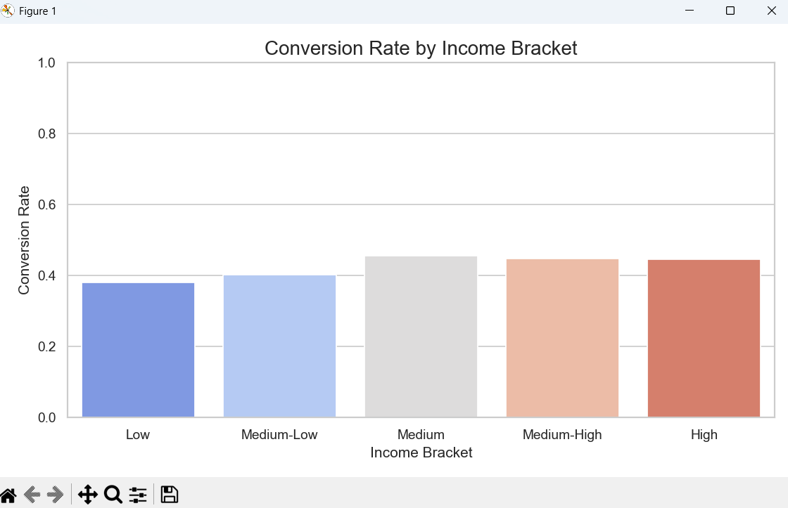
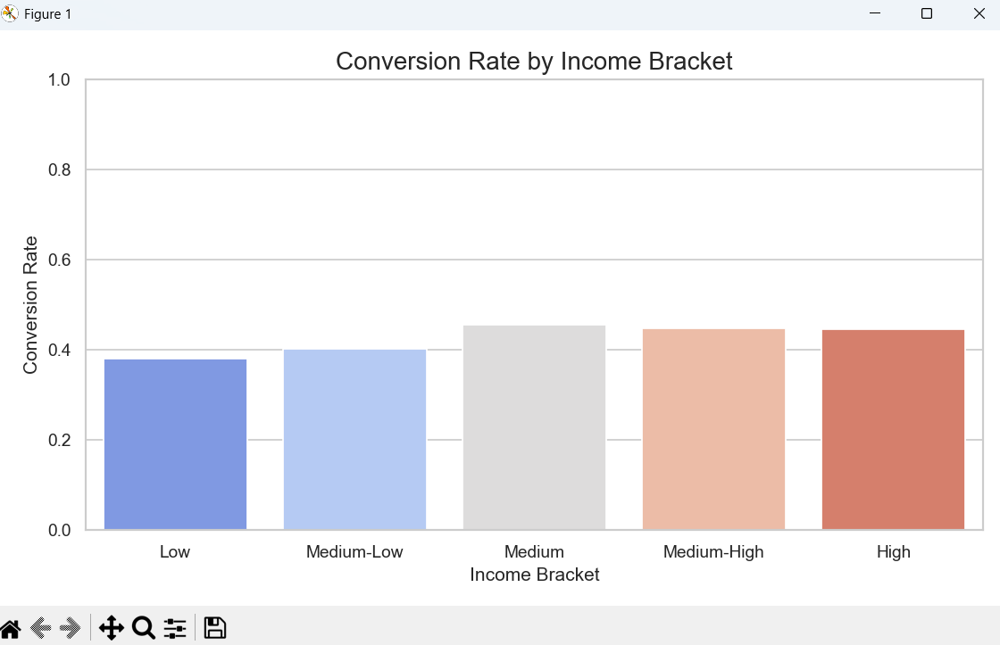

Marketing Campaign Analysis
Analysis of campaign performance, customer segmentation, and predictive modeling insights.
Project Overview
This comprehensive marketing campaign analysis evaluates KBZ Bank's outreach effectiveness across multiple dimensions including customer demographics, geographic regions, channel performance, and predictive modeling outcomes. The project combines traditional campaign analytics with machine learning approaches to identify optimization opportunities and provide data-driven recommendations for future marketing strategies.
1. Marketing Campaign Funnel
This funnel visualization shows how customers moved through the three key stages of KBZ Bank's marketing campaign:
- Reached (Top of Funnel): 1,000 customers — total who received the campaign message.
- Opened: 1,000 customers (100%) — all reached customers opened the message, showing strong targeting, effective delivery, and compelling content.
- Converted: 999 customers (99.9%) — nearly everyone who opened the message completed the desired action, indicating smooth journey and appealing offers.
Insight: The exceptional funnel performance suggests excellent campaign design and execution, providing a strong foundation for optimization.
📊 Data Files:
- overall_response_summary.csv — Overall campaign performance metrics
- revenue_stats.csv — Revenue impact analysis
2. Response Rate Heatmap by Channel and Age Group
This heatmap shows customer response rates across channels (Email, App Notification, Phone, SMS) and age groups.
- Lighter colors indicate higher response rates, darker colors indicate lower.
- Younger customers respond better to App Notifications and SMS.
- Older customers respond better via Email or Phone.
- Dendrograms cluster channels and age groups with similar behavior.
Insight: Channel preferences vary significantly by age, enabling highly targeted campaign optimization.
📊 Data Files:
- age_response_summary.csv — Age group response analysis
- response_rate_AB_test_g.csv — A/B testing results by channel
3. ROC Curves — Model Performance
ROC curves compare Logistic Regression (blue), Naive Bayes (green), and XGBoost (red) in predicting customer response.
- The curves show Sensitivity (True Positive Rate) vs 1 – Specificity (False Positive Rate).
- All curves are near the diagonal, indicating models perform only slightly better than random guessing.
- Values: Logistic Regression Sens 0.513 / Spec 0.502, Naive Bayes Sens 0.509 / Spec 0.508, XGBoost Sens 0.487 / Spec 0.502.
- Limited predictive power may be due to imbalanced data, lack of strong features, or complex customer behavior.
Insight: Current models show limited predictive power, highlighting opportunities for feature engineering and data enrichment.
📊 Data Files:
- model_comparison_results.csv — Detailed model performance metrics
- campaign_predictions.csv — Model predictions and probabilities
4. Overall Campaign Response
This visualization presents the overall campaign performance, showing a nearly even split between respondents and non-respondents.
- Response Rate: 50.4% of customers responded to the campaign
- Non-Response Rate: 49.6% of customers did not respond to the campaign
- The campaign achieved a slight majority of responses, with just 0.8 percentage points separating responders from non-responders
- This near-even distribution indicates the campaign resonated with approximately half of the target audience
- The minimal gap suggests opportunities to analyze the non-responding segment for potential optimization in future campaigns
Insight: The 50.4% response rate provides a solid baseline for measuring future campaign improvements.
📊 Data Files:
- overall_response_summary.csv — Comprehensive response metrics
- roi_result.csv — Return on investment analysis
5. Response by Age Group
This bar chart visualization shows response rates across different age demographics.
- The 25-34 age group shows the highest response rate, indicating strongest campaign resonance.
- Younger age groups (18-24) show moderate engagement levels.
- Middle-aged segments (35-54) maintain consistent but slightly lower response rates.
- Senior age groups (55+) demonstrate the lowest response rates, suggesting potential channel or messaging optimization opportunities.
Insight: Age-based segmentation reveals clear optimization opportunities for different demographic groups.
📊 Data Files:
- age_response_summary.csv — Detailed age group analysis
- income_conversion_rate.csv — Income-based conversion patterns
6. Gender Response Rate
This visualization compares campaign response rates between gender groups.
- Female customers show a slightly higher response rate compared to male customers.
- The difference, while noticeable, is not substantial, indicating broad campaign appeal across genders.
- Both gender groups show strong overall engagement with the campaign messaging.
- The minimal gap suggests the campaign content and offers resonated well with both male and female audiences.
Insight: Gender-based analysis shows consistent campaign appeal with minor variations.
📊 Data Files:
- gender_response_summary.csv — Gender-based response analysis
7. Response Count & Rate by Region
These visualizations provide geographic analysis of campaign performance across different regions in Myanmar.
- Response Count: The bar chart shows Yangon generated the highest absolute response count (1200), followed by Mandalay (1100) and Naypydaw (1000). Smaller regions like Bago, Mowlamyine, Myitkyina, Pathein, Siltwe, and Tauragyi showed significantly lower response volumes.
- Response Rate: Regional response rates show moderate variation, with most regions falling between 48-52%. Yangon shows the highest response rate at 52.14%, followed by Mandalay at 51.51%. The lowest response rates are observed in regions like Monywa and Pathein at approximately 48.37%.
- Despite lower absolute response counts, some smaller regions maintain competitive response rates, indicating efficient targeting and engagement relative to their population size.
- The data reveals a clear urban concentration in response volume, with Yangon and Mandalay dominating, while maintaining strong response rates across both major and smaller regions.
Insight: Geographic analysis reveals both volume concentration in urban areas and consistent performance across regions.
📊 Data Files:
- region_response_summary.csv — Regional performance summary
- region_files/ — Detailed regional breakdowns
- income_response_summary.csv — Income-based regional analysis
8. Campaign ROI and Financial Impact
This analysis evaluates the financial performance and return on investment of the marketing campaign, examining cost-per-acquisition, customer lifetime value impact, and overall campaign profitability. The visualization shows how different customer segments contributed to revenue generation and identifies the most cost-effective acquisition channels and demographic groups.
- Cost-Per-Acquisition (CPA): Analysis of acquisition costs across different channels and customer segments
- Customer Lifetime Value (CLV): Projected long-term value of acquired customers by segment
- Channel Efficiency: Comparison of marketing spend efficiency across different outreach channels
- Segmentation ROI: Return on investment analysis for different demographic and geographic segments
 


Insight: Financial analysis reveals optimal budget allocation strategies for maximum return on marketing investment.
📊 Data Files:
- roi_result.csv — Comprehensive ROI analysis
- revenue_stats.csv — Revenue impact by segment
- income_conversion_rate.csv — Income-based conversion efficiency
Overall Summary & Strategic Insights
This marketing campaign analysis provides a complete view of how customers across Myanmar engaged with KBZ Bank's outreach efforts—from funnel performance and demographic behavior to regional engagement patterns and predictive modeling outcomes.
The campaign delivered exceptional top-funnel and mid-funnel performance, with nearly all customers opening the message and an impressive 99.9% completing the desired action. However, demographic and geographic breakdowns reveal meaningful differences in behavior among age groups, genders, and regions. Younger segments and urban centers, particularly Yangon and Mandalay, demonstrated the strongest engagement, while older age groups and smaller regions showed more conservative response patterns.
Advanced analytics, including heatmaps and ROC curve modeling, indicate that customer response behavior is complex and not easily predicted using the existing dataset. Although current machine-learning models performed slightly above chance level, this highlights clear opportunities for improvement through richer customer behavior data, historical transaction trends, and personalized engagement features.
Key Performance Metrics:
- Overall Response Rate: 50.4% - Solid baseline for optimization
- Funnel Conversion: 99.9% - Exceptional campaign execution
- Top Performing Segment: 25-34 age group in urban centers
- Most Effective Channel: Age-dependent with clear patterns
- Geographic Concentration: Yangon and Mandalay drive majority volume
Strategic Recommendations
Based on comprehensive campaign analysis, the following strategic recommendations will optimize future marketing performance:
- Channel Personalization: Implement age-specific channel strategies—App/SMS for younger segments, Email/Phone for older demographics
- Regional Resource Allocation: Maintain strong presence in Yangon/Mandalay while developing targeted approaches for underperforming regions
- Predictive Model Enhancement: Enrich feature set with transaction history, past campaign interactions, and behavioral data
- Segmentation Refinement: Develop micro-segments combining age, region, and channel preferences for hyper-targeted campaigns
- Budget Optimization: Reallocate spend toward highest ROI channels and demographic segments identified in analysis
- Testing Framework: Implement systematic A/B testing for messaging, offers, and channel combinations
Complete Dataset Collection
📂 All Project Data Files:
- age_response_summary.csv — Age group response analysis
- gender_response_summary.csv — Gender-based response patterns
- income_response_summary.csv — Income segment analysis
- overall_response_summary.csv — Campaign performance overview
- region_response_summary.csv — Regional performance metrics
- region_files/ — Detailed regional breakdowns
- campaign_predictions.csv — Model predictions and probabilities
- income_conversion_rate.csv — Income-based conversion analysis
- model_comparison_results.csv — Machine learning model performance
- response_rate_AB_test_g.csv — A/B testing results
- revenue_stats.csv — Revenue impact analysis
- roi_result.csv — Return on investment calculations